) is private.
) is private.Solution to WebDB Assignment 1 (Spring 2012)
11500811g QING Pei
pei.qing@connect.polyu.hk
2012-02-29
Question 1 - Schema Design with IBM DB2
(a)
XPath
/forms/form/leader[mode="Full"][department="COMP"]/name/text()
XQuery
for $l in db2-fn:xmlcolumn('PSUDO_DATA.PSUDO_DATA_TABLE')//leader
where $l/department="COMP" and $l/mode="Full"
return $l/name
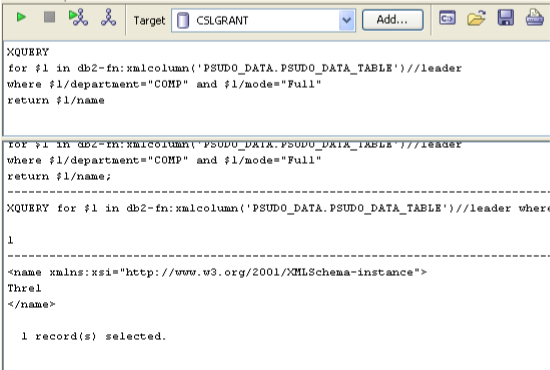
(b)
XPath
count(//form[members/group_member/name=//leader/name])
XQuery
let $f:=db2-fn:xmlcolumn('PSUDO_DATA.PSUDO_DATA_TABLE')/forms
let $m:=$f/form//group_member
for $l in $f/form/leader
where $l/name=$m/name
return count($l)
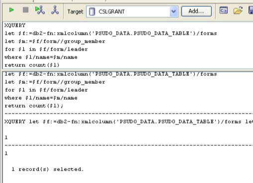
(c)
XPath
//details[activity_item//date/text()="2012-06-20"]/project_name
XQuery
for $d in db2-fn:xmlcolumn('PSUDO_DATA.PSUDO_DATA_TABLE')//details
where $d/activity_item//date/text()="2012-06-20"
return $d/project_name
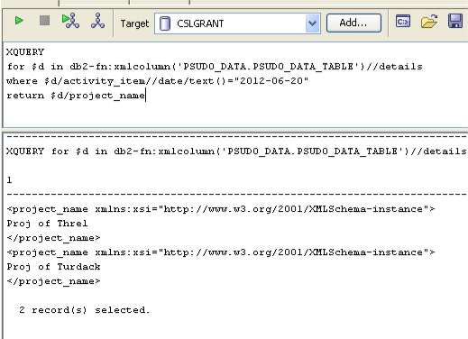
(d)
XPath
Not applicable.
XQuery
let $pool := db2-fn:xmlcolumn('PSUDO_DATA.PSUDO_DATA_TABLE')//details[activity_item//date/text()="2012-06-20"]
for $index in 1 to count($pool)
where $index > 1 and
$pool[$index - 1]//activity_item[//date/text()="2012-06-20"]/place =
$pool[$index]//activity_item[//date/text()="2012-06-20"]/place
return
<pair>
{data($pool[$index - 1]/project_name)}, {data($pool[$index]/project_name)}
</pair>
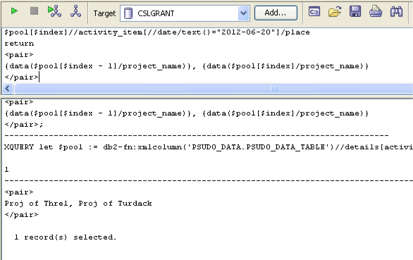
(e)
XPath
//form[.//total_expenditure/applied>30000][count(.//activity_item)<3]/details/project_name
XQuery
for $d in db2-fn:xmlcolumn('PSUDO_DATA.PSUDO_DATA_TABLE')//form[.//total_expenditure/applied>30000][count(.//activity_item)<3]/details
return $d/project_name
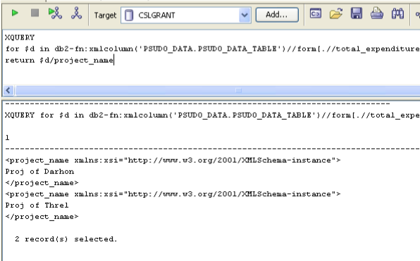
(f)
XPath
Not applicable.
XQuery
<group>
{
for $f in db2-fn:xmlcolumn('PSUDO_DATA.PSUDO_DATA_TABLE')//forms/form
let $sum := sum($f//activity_item/number_of_user)
where $sum < 100
return
<project>
<name>{data($f//project_name)}</name>,
<users>{$sum}</users>
<peruser>{$f//total_expenditure/applied div $sum}</peruser>
</project>
}
</group>
,
<group>
{
for $f in db2-fn:xmlcolumn('PSUDO_DATA.PSUDO_DATA_TABLE')//forms/form
let $sum := sum($f//activity_item/number_of_user)
where $sum < 1000 and $sum > 100
return
<project>
<name>{data($f//project_name)}</name>,
<users>{$sum}</users>
</project>
}
</group>
,
<group>
{
for $f in db2-fn:xmlcolumn('PSUDO_DATA.PSUDO_DATA_TABLE')//forms/form
let $sum := sum($f//activity_item/number_of_user)
where $sum > 1000
return
<project>
<name>{data($f//project_name)}</name>,
<users>{$sum}</users>
</project>
}
</group>
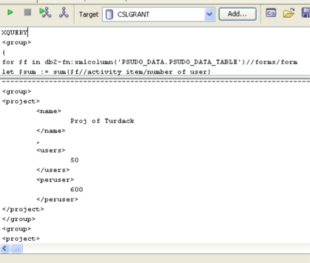 continued... 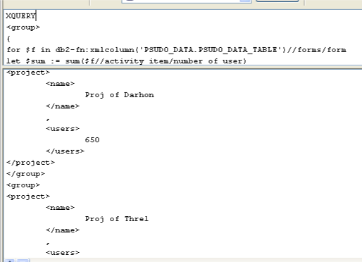 continued... 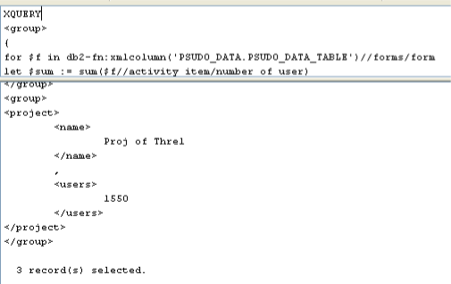
Question 2 - DTD
The DTD is designed as the following.
<?xml version="1.0" encoding="UTF-8"?>
<!ELEMENT dags (dag*)>
<!ELEMENT dag (nodes, edges)>
<!ATTLIST dag name ID #REQUIRED>
<!ELEMENT nodes EMPTY>
<!ATTLIST nodes labels IDREFS #IMPLIED>
<!ELEMENT edges EMPTY>
<!ATTLIST edges labels IDREFS #IMPLIED>
<!ELEMENT node (#PCDATA)>
<!ATTLIST node label ID #REQUIRED>
<!ELEMENT edge (head_node, tail_node, weight)>
<!ATTLIST edge id ID #REQUIRED>
<!ELEMENT head_node EMPTY>
<!ATTLIST head_node label IDREF #REQUIRED>
<!ELEMENT tail_node EMPTY>
<!ATTLIST tail_node label IDREF #REQUIRED>
<!ELEMENT weight (#PCDATA)>
Being acyclic means there is no edge from a node to any of its ancestors. DTD cannot model the acyclic property. The schema languages only apply constraints on the content of data, with little limitations on their relationship with other context. The identity constraints using ID and IDREF can only force the nodes and edges to be unique, i.e. no duplicate edges from $node_i$ to $node_j$ can be inserted. With an edge from $node_i$ to $node_j$ existing in a graph, the constrains cannot even prevent another edge from $node_j$ to $node_i$ from being inserted, not to mention any limits on the IDREFS attributes of the nodes and edges elements.
The approach I currently regard as feasible is to check upon edge insertions. The reason for that is given below.
- Inserting a orphaned node to the existing graphs does not create any cycles.
- Inserting an edge from $node_i$ to $node_j$ to a graph $G$ does not affect other graphs that has no reference to this edge.
Therefore, we only need to check the DAG which the new edge is inserted into. (Bulk insertion into multiple DAGs can be treated as a sequence of individual insertions. Then for each individual insertion, the procedure is the same.) Here is the procedure for checking.
- Select the DAG involving the edge insertion.
- Form an adjacency matrix A that fully represents the DAG with $A_{ij}$ as the edge weight from $node_i$ to $node_j$. A weight of 0 means there is no such edge.
- Actually, only a boolean (weight == 0) is necessary to check for cycles. The weight does not offer extra help here.
- Then use topological sorting algorithm by Kahn, A. B. (1962) to test if the graph has at least one cycle.
- If any error occurs, break and reject the edge to be inserted.
Kahn's algorithm:
L ← Empty list that will contain the sorted elements
S ← Set of all nodes with no incoming edges
while S is non-empty do
remove a node n from S
insert n into L
for each node m with an edge e from n to m do
remove edge e from the graph
if m has no other incoming edges then
insert m into S
if graph has edges then
return error (graph has at least one cycle)
else
return L (a topologically sorted order)
Question 3 - Schema Design
Schema
Here is the XML schema designed for the show.
<?xml version="1.0" encoding="utf-8"?>
<xs:schema xmlns:t="http://qingpei.me/COMP5323"
xmlns:xs="http://www.w3.org/2001/XMLSchema"
xmlns:xsd="http://www.w3.org/2001/XMLSchema"
targetNamespace="http://qingpei.me/COMP5323"
elementFormDefault="qualified" attributeFormDefault="unqualified">
<xs:element name="show">
<xs:complexType>
<xs:sequence>
<xs:element name="name" type="xs:string" >
<xs:element ref="t:episode" maxOccurs="unbounded" >
<xs:element ref="t:star_chef" minOccurs="4"
maxOccurs="unbounded" />
<xs:element ref="t:ingredient" maxOccurs="unbounded" >
<xs:element ref="t:challenger" maxOccurs="unbounded" >
</xs:sequence>
</xs:complexType>
<xs:key name="episode_id">
<xs:selector xpath="t:episode" >
<xs:field xpath="t:number" >
</xs:key>
<xs:key name="chef_id">
<xs:selector xpath="t:star_chef" >
<xs:field xpath="t:name" >
</xs:key>
<xs:key name="challenger_id">
<xs:selector xpath="t:challenger" >
<xs:field xpath="t:name" >
<xs:field xpath="t:restaurant" >
</xs:key>
<xs:key name="ingredient_id">
<xs:selector xpath="t:ingredient" >
<xs:field xpath="t:id" >
</xs:key>
<xs:keyref name="episode_idref" refer="t:episode_id">
<xs:selector xpath="t:star_chef/t:episode_appeared" />
<xs:field xpath="@ref" >
</xs:keyref>
<xs:keyref name="chef_idref" refer="t:chef_id">
<xs:selector xpath="t:episode/t:star_chef|t:episode/t:challenged_chef" />
<xs:field xpath="@ref" >
</xs:keyref>
<xs:keyref name="challenger_idref" refer="t:challenger_id">
<xs:selector xpath="t:episode/t:challenger" />
<xs:field xpath="@key1" >
<xs:field xpath="@key2" >
</xs:keyref>
<xs:keyref name="ingredient_idref" refer="t:ingredient_id">
<xs:selector xpath="t:episode/t:ingredient" />
<xs:field xpath="@ref" >
</xs:keyref>
<xs:unique name="ingredient">
<xs:selector xpath="t:episode/t:ingredient" />
<xs:field xpath="@ref" >
</xs:unique>
</xs:element>
<xs:element name="episode">
<xs:complexType>
<xs:complexContent>
<xs:extension base="t:episodeType" >
</xs:complexContent>
</xs:complexType>
<xs:key name="judge_id">
<xs:selector xpath="t:judge" >
<xs:field xpath="t:name" >
</xs:key>
<xs:key name="star_id">
<xs:selector xpath="t:star_chef|t:challenged_chef" >
<xs:field xpath="@ref" >
</xs:key>
<xs:unique name="judge_name">
<xs:selector xpath="t:judge" >
<xs:field xpath="t:name" >
</xs:unique>
</xs:element>
<xs:complexType name="episodeType">
<xs:sequence>
<xs:element name="number" type="xs:positiveInteger" >
<xs:element name="star_chef" type="t:refType" minOccurs="3"
maxOccurs="3" />
<xs:element name="challenged_chef" type="t:refType" >
<xs:element name="challenger" type="t:doubleRefType" >
<xs:element name="ingredient" type="t:refType" >
<xs:element name="judge" minOccurs="4" maxOccurs="4">
<xs:complexType>
<xs:sequence>
<xs:element name="name" type="xs:string" >
<xs:element name="score_star" type="t:scoreType" >
<xs:element name="score_challenger"
type="t:scoreType" />
</xs:sequence>
</xs:complexType>
</xs:element>
<xs:element name="winner_is_challenger" type="xs:boolean" >
</xs:sequence>
</xs:complexType>
<xs:element name="star_chef">
<xs:complexType>
<xs:complexContent>
<xs:extension base="t:personType">
<xs:sequence>
<xs:element name="episode_appeared" type="t:refType"
maxOccurs="unbounded" />
</xs:sequence>
</xs:extension>
</xs:complexContent>
</xs:complexType>
</xs:element>
<xs:complexType name="personType">
<xs:sequence>
<xs:element name="name" type="xs:string" >
</xs:sequence>
</xs:complexType>
<xs:complexType name="refType">
<xs:attribute name="ref" use="required" >
</xs:complexType>
<xs:element name="ingredient" type="t:ingredientType" >
<xs:complexType name="ingredientType">
<xs:sequence>
<xs:element name="id" type="xs:positiveInteger" >
<xs:element name="name" type="xs:string" >
</xs:sequence>
</xs:complexType>
<xs:complexType name="challengerType">
<xs:complexContent>
<xs:extension base="t:personType">
<xs:sequence>
<xs:element name="restaurant" type="xs:string" >
</xs:sequence>
</xs:extension>
</xs:complexContent>
</xs:complexType>
<xs:element name="challenger" type="t:challengerType" >
<xs:complexType name="doubleRefType">
<xs:attribute name="key1" use="required" >
<xs:attribute name="key2" use="required" >
</xs:complexType>
<xs:complexType name="scoreType">
<xs:sequence>
<xs:element name="taste">
<xs:simpleType>
<xs:restriction base="xs:int">
<xs:minInclusive value="0" >
<xs:maxInclusive value="20" >
</xs:restriction>
</xs:simpleType>
</xs:element>
<xs:element name="appearance">
<xs:simpleType>
<xs:restriction base="xs:int">
<xs:minInclusive value="0" >
<xs:maxInclusive value="20" >
</xs:restriction>
</xs:simpleType>
</xs:element>
</xs:sequence>
</xs:complexType>
</xs:schema>
- xs:key to eliminate duplicate star chefs in the entire show.
- xs:key combined with name and restaurant to identify a unique challenger.
- xs:unique to ensure the 4 stars in a single episode are different.
- xs:keyref where applicable to ensure data inputs are valid keys in the scope.
XQuery to Find the Top Chef
In the design philosophy of the above schema, I thought it would be better if each star_chef element holds a reference to all episodes that chef has shown up while the episode element holds references to the chefs in that particular episode. By cross-referencing these elements, it would be easier to query all the data about a given star_chef without having to traverse every episode.
The additional information stored in the xml file does make the insertion operation more complicated and a little bit more time consuming. However, that may speed up queries. In my opinion, sacrificing the write access time for faster queries is worthy. There would be far more queries than database updates.
The query to find the top chef can be written like this:
declare namespace t = "http://qingpei.me/COMP5323";
for $c in doc("show.xml")/t:show/t:star_chef
order by count($c/t:episode_appeared) descending
return
<p>{data($c/t:name)} , {count($c/t:episode_appeared)}</p>
It is also feasible to get the same result without using episode_appeared information of each chef but looking for things in the episode subtrees.
declare namespace t = "http://qingpei.me/COMP5323";
let $d := doc("show.xml")
for $name in $d/t:show//t:star_chef/t:name
let $ep := $d/t:show/t:episode
let $pool := $ep/t:star_chef | $ep/t:challenged_chef
let $count := count($pool[@ref = $name])
order by $count descending
return
<chef>{$name/text()}, {$count }</chef>
Many-to-many relationship in XML Schema
To model a many-to-many relationship in XML Schema, the following ways are possible:
- When an element is related to another, store a copy of it in the target.
- Pros
- All the related data are physically stored together. Accessing is more sequential.
- Cons
- All occurrences have to be taken care of when add/modify/remove anything that is not isolated.
- Inefficient storage usage with much duplication in data.
- Pros
- Use xs:ID and xs:IDREF or use xs:key and xs:keyref to store only the references to the elements related.
- Pros
- No duplicate data.
- Less mismatches. Only existing elements can be referred to.
- Cons
- Random accesses following the references.
- Pros
- Add extra entities to store the relationships, converting the relationship to 1:N.
- Pros
- Easier to access all the relationships.
- Cons
- The tree structure changes to a less intuitive one.
- Pros
Question 4 - Oracle and another XML DB
Comparison of XML support between Sedna and Oracle XML DB.
Storage Method
Sedna
The Sedna Database stores the following objects:
- Database
- Collection and Stand-alone document
- Document in Collection
Data are stored in blocks chained into bidirectional lists.
- Node descriptors are ordered across blocks according to document order.
- Bi-directional references from the descriptive schema node to/from the block.
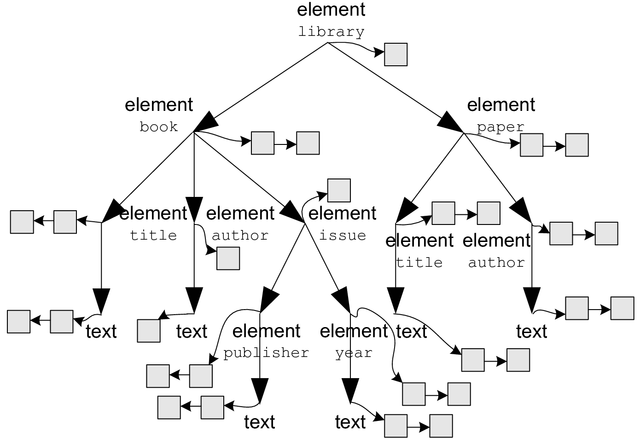
Oracle XML DB
The two main features in Oracle XML DB architecture are:
- XMLType tables and views storage
- When XML Schema are registered with Oracle XML DB, XML elements for XMLType tables, tables with XMLType columns, and XMLType views, are mapped to database tables. These can be viewed and accessed in XML repository.
- Data in XMLType tables and tables with XMLType columns can be stored in Character Large Objects (CLOB) or natively using structured XML.
- Data in XMLType views can be stored in local tables or remote tables. The latter can be accessed through DBLinks.
- Both XMLType tables and views can be indexed using B*Tree, Oracle Text, function-based, or bitmap indexes.
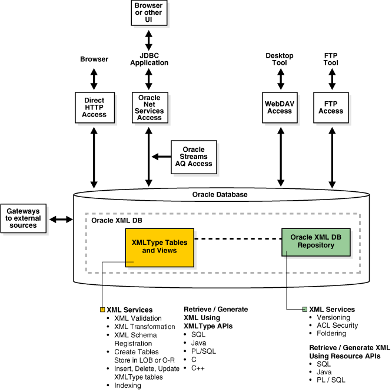
- Oracle XML DB repository, also referred to in this manual as XML repository or repository
- Oracle XML DB repository (XML repository or repository) is an XML data repository in Oracle Database optimized for handling XML data. At the heart of Oracle XML DB repository is the Oracle XML DB foldering module.
Schema/DTD
Sedna
By default an XMLReader does not parse Comments, CDATA or DTD Declarations. However the Sedna XML:DB API can (with a tweak).
A descriptive schema-driven storage strategy is developed which consists of clustering nodes of an XML document according to their positions in the descriptive schema of the document. In contrast to a prescriptive schema that is known in advance and is usually specified in DTD or XML Schema, the descriptive schema is generated from data dynamically (and is maintained incrementally) and represents a concise and an accurate structure summary for data. Using the descriptive schema instead of the prescriptive one makes the storage strategy applicable to any XML document, even a one that comes with no prescriptive schema.
Oracle XML DB
Oracle XML DB uses annotated XML Schema as metadata, that is, the standard XML Schema definitions along with several Oracle XML DB-defined attributes. These attributes control how instance XML documents get mapped to the database. Because these attributes are in a different namespace from the XML Schema namespace, such annotated XML Schemas are still legal XML Schema documents.
When using Oracle XML DB with XML Schema, you must first register the XML Schema. You can then use the XML Schema URLs while creating XMLType tables, columns, and views. The XML Schema URL, in other words, the URL that identifies the XML Schema in the database, is associated with the schemaurl parameter of registerSchema.
Oracle XML DB provides XML Schema support for the following tasks:
- Registering any W3C-compliant XML Schemas.
- Validating your XML documents against a registered XML Schema definitions.
- Registering local and global XML Schemas.
- Generating XML Schema from object types.
- Referencing an XML Schema owned by another user.
- Explicitly referencing a global XML Schema when a local XML Schema exists with the same name.
- Generating a structured database mapping from your XML Schemas during XML Schema registration. This includes generating SQL object types, collection types, and default tables, and capturing the mapping information using XML Schema attributes.
- Specifying a particular SQL type mapping when there are multiple legal mappings.
- Creating XMLType tables, views and columns based on registered XML Schemas.
- Performing manipulation (DML) and queries on XML Schema-based XMLType tables.
- Automatically inserting data into default tables when schema-based XML instances are inserted into Oracle XML DB repository using FTP, HTTP/WebDAV protocols and other languages.
In addition to supporting XML Schema that provide a structured mapping to object- relational storage, Oracle XML DB also supports DTD specifications in XML instance documents. Though DTDs are not used to derive the mapping, XML processors can still access and interpret the DTDs.
- Inline DTD Definitions When an XML instance document has an inline DTD definition, it is used during document parsing. Any DTD validations and entity declaration handling is done at this point. However, once parsed, the entity references are replaced with actual values and the original entity reference is lost.
- External DTD Definitions
Oracle XML DB also supports external DTD definitions if they are stored in the repository. Applications needing to process an XML document containing an external DTD definition such as
/public/flights.dtd, must first ensure that the DTD document is stored in Oracle XML DB at path/public/flights.xsd.
Query Support and Indexing
Sedna
Sedna has a wide range of queries/statements support: XQuery queries, XML update statements, data definition language statements
The following XPath evaluations are supported.
- Simple absolute XPath:
/library/book/title(descriptive schema evaluation only) - Absolute XPath with descendant axes:
/library//title(descriptive schema with merge by labeling schema) - XPath with predicates:
/library/book[title=“XQuery”]/author - following,sibling,parent,…:
/library//author[text()=“Tolstoy”]/..
Index implementations:
- B+-tree
- Clusterization
- Error counters
- Pre-sorting during create
- Markers on Schema
Full-text indices and IR:
- Integration with external engine: dtSearch
- ACID support and lazy evaluation
Oracle XML DB
The following processing options are available:
- XSLT
- DOM fidelity, document fidelity.
- XPath searching.
- XMLType views.
- XQuery
A hierarchical index speeds up folder and path traversals. Oracle XML DB includes a new, patented hierarchical index that speeds up folder and path traversals in Oracle XML DB repository. The hierarchical index is transparent to end users, and allows Oracle XML DB to perform folder and path traversals at speeds comparable to or faster than conventional file systems.
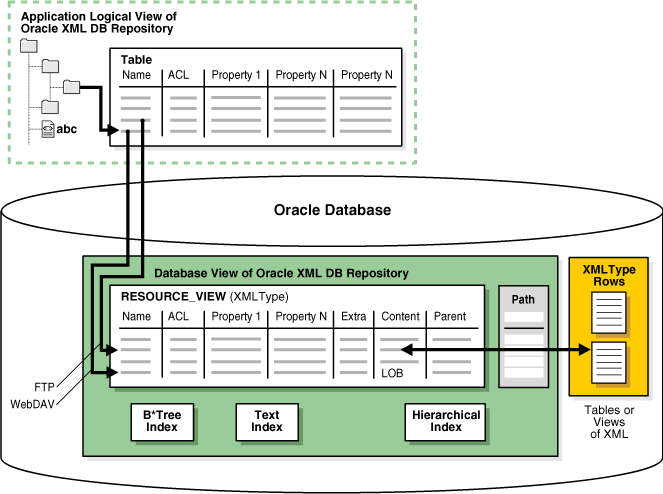
One key decision to make when using Oracle XML DB for persisting XML documents is when to use structured- and when to use unstructured storage.
- Unstructured Storage
- Text and function-based indexes.
- Structured Storage
- B-Tree, text and function-based indexes.
Oracle supports Full Text search on documents that are managed by the Oracle Database.
Transaction Management
Sedna
Principles
- ACID transactions
- Atomicity – rollback procedure
- Consistency – by design
- Isolation – S2PL and snapshots
- Durability – two-level recovery scheme
- Versioning environment
- Support for Read-Only transactions
- Physical recovery using persistent snapshot
- Logical recovery using log of micro-operations
Versioning Scheme
- Page-level versioning
- Consistent with internal representation (e.g. following the pointers)
- Transaction-transparent solution
- All logic is encapsulated in a separate module on SM
- Limited number of versions for each page
- More effective maintenance and garbage collecting (4 versions on 2 snapshots)
- Support for snapshots to process read-only transactions
- No isolation is required
- Long-running read-only transactions cannot be rolled back due to the lack of versions
Isolation
- Usual transactions
- S2PL protocol
- Document-level granularity
- Read-only transactions
- No isolation is required since they use transaction-consistent snapshots
Oracle XML DB
Oracle XML DB versioning helps keep track of all changes on version-controlled Oracle XML DB resources (VCR). The following sections discuss these features in detail. Oracle XML DB versioning features include the following:
- Version control on a resource.
You have the option to turn on or off version control on an Oracle XML DB resource. - Updating process of a version-controlled resource.
When Oracle XML DB updates a version-controlled resource, it also creates a new version of the resource, and this version will not be deleted from the database when the version-controlled resource is deleted by you. - Loading a version-controlled resource is similar to loading any other regular resource in Oracle XML DB using the path name.
- Loading a version of the resource.
To load a version of a resource, you must first find the resource object id of the version and then load the version using that id. The resource object id can be found from the resource version history or from the version-controlled resource itself.
Interface to RDBMSs
Sedna
- SQL connection from XQuery.
- Through ODBC interface
- Allows querying and updating relational databases
- Query results are presented as a sequence of XML elements:
<tuple column1=“value1” … columnN=“valueN”/>
- APIs developed by Sedna team:
- C
- Java
- Scheme
- OmniMark (Stilo’s streaming programming language used for content engineering tasks)
- APIs contributed by Sedna open source users:
- Python
- PHP
- .Net
- XML:DB API (standard API for XML databases, supported by other products also)
Oracle XML DB
- Oracle XML DB Resource APIs.
These are used to access XMLType and other data. In other words, to access data in the Oracle XML DB hierarchically indexed repository. The APIs are available in the following languages:- SQL, through the RESOURCE_VIEW and PATH_VIEW APIs
- PL/SQL, through DBMS_XDB and DBS_XMLSTORE APIs
- Java through the Resource API for Java
- C (OCI) through the C API for XML
- Oracle Data Provider for .NET (ODP.NET)
- Oracle XML DB Protocol Server.
Oracle XML DB supports FTP, HTTP, and WebDAV protocols, as well as JDBC, for fast access of XML data stored in Oracle Database in XMLType tables and columns.
References
Why does my XQuery fail when I override the default namespace?